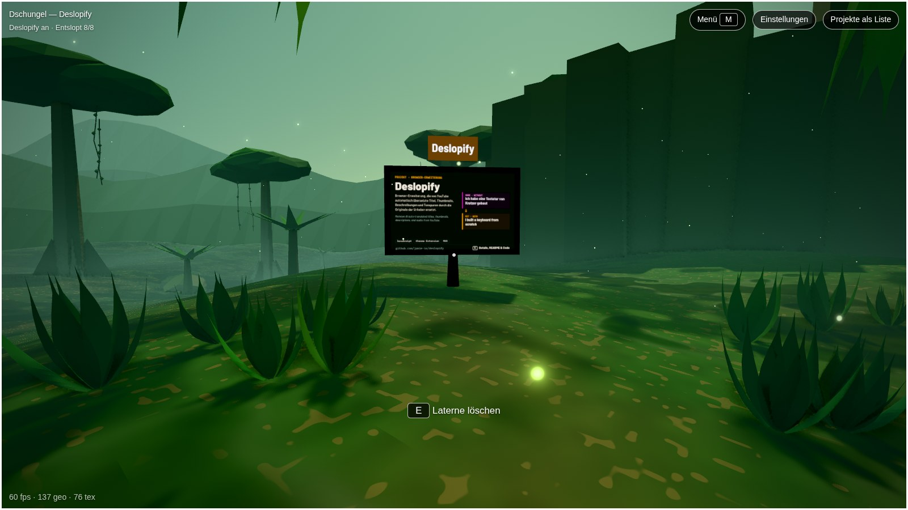

A 60 × 45 m bowl with cliffs on three sides. The portal, the arch, the exhibit and the waterfall sit on one line, so the goal is in view from the first second. The height changes along the way do the work that distance did before: you look down from a ledge, cross a marsh on a boardwalk, climb the commit steps to the arch, and walk behind the waterfall into the cave. The full tour is 58 m, about 13 s of walking, and every station is one click away in the station bar.

Exhibit as it stands in today's build. E opens /p/deslopify/info.Today's main trail alone is 115 m (25 s) before detours. With reading time, a full visit here is about a minute. Clicking through all seven stations takes about 8 s.
Up to 8 stations per world, in story order, number keys 1–8, 0 for the portal. A click glides the figure there along waypoints in 0.7–1.6 s. Collisions are ignored, but triggers still fire, so gliding past the arch installs Deslopify. Hidden during the arrival camera.
The world opens with the whole layout in frame and a one-line pitch over it, then eases down behind the figure. Any input skips it. It plays on the first visit per session, and later visits start at the shoulder.
One per world, for its key event, here the install ring. The camera pulls up to the overview for 2.6 s, the ring runs across the whole bowl, and control returns. Any key skips it. With reduced motion it cuts instead of flying.
A height-limited layer from 0 to 2.2 m above the ground, masked by area, never scene-wide distance fog. It thins with height, so overview and aerial shots stay readable. It is cleared by the same ring mask that wipes the cards.
A landmark readable from 20 m, a stand spot, a 3 m trigger, a plate with kicker, title, two lines of German and one of English, and one thing that reacts when you arrive. E is optional, never required to see the content.
A bowl no bigger than 60 × 45 m with a rim that hides the edge. The portal looks along one axis at the landmark. Stations are 4–12 m apart, and the full tour is at most 60 m or 15 s of walking. Each act gets one change in height, and no dead end is longer than 15 m.
These follow the repo rules in AGENTS.md: one to a few thousand triangles per prop, one to three materials, colour and AO in vertex colour, meshopt-compressed to tens of kB, and the procedural build kept as a fallback. Register each model in author.py and in environment-models.mjs under the jungle. Terrain, flora, vines, tags and the waterfall stay procedural.